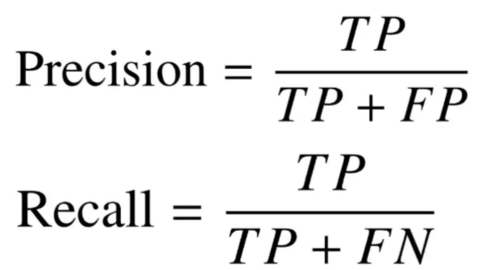
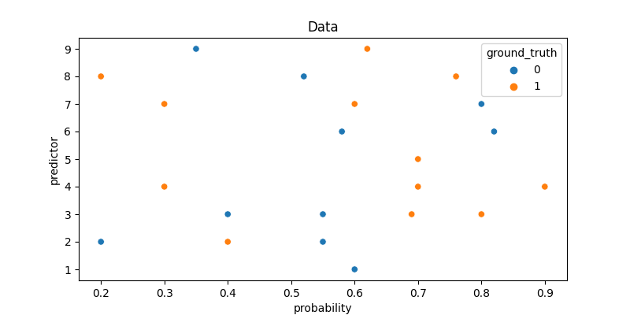
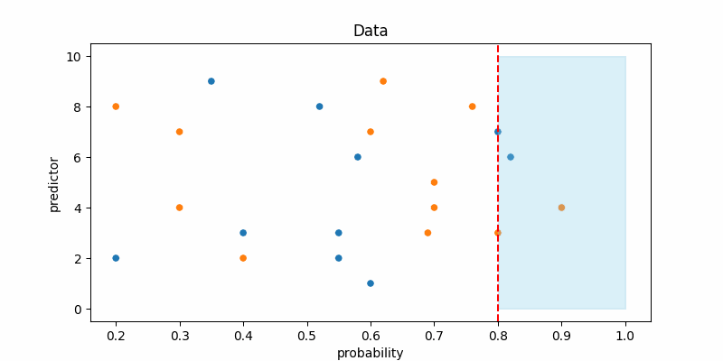
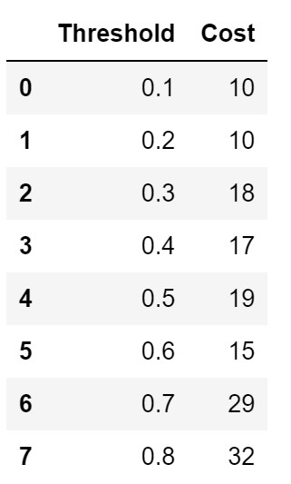

When dealing with imbalanced datasets, if you don’t include the classification costs of type 1 and type 2 error you are most likely will get sub-optimal result. Because usually in imbalanced datasets the positive class is more important than the negative class (type 2 error is more severe than type 1 error) and by default all machine learning models are treating both positive class and negative class equally. In this posts, I will explained how important to determine the cost of type 1 and type 2 error and tuned your model based on it.
Introduction of Type 1 and Type 2 errors
We’re advised against relying on accuracy when dealing with imbalanced datasets. This is because the model mostly predicts the more common class and can give a misleading result. However, if we think about it logically, we might not be too concerned about which class the model prefers. What really matters is that the model minimizes its error predictions as much as possible or gets the highest number of accuracy, right? We’re also told to use techniques like undersampling or oversampling to balance the data so that the model can treat both classes more equally. So, what’s the actual reason for doing all of this? The answer is because of the differences in the costs/effects between Type 1 and Type 2 errors.
Type 1 error, commonly known as false positive, is a situation where the model predicts a positive output, but in reality, it’s negative (for example: the model predicts someone has COVID, but in truth, that person doesn’t have COVID).
Type 2 error, often referred to as false negative, is a situation where the model predicts a negative output, but in reality, it’s positive (for example: the model predicts someone doesn’t have COVID, but in truth, that person has COVID).
If the consequences of Type 1 and Type 2 errors are the same (equal misclassification cost) in severe imbalanced dataset, then high accuracy may indicate a good model, and there’s no need to go through the trouble of using under/oversampling techniques because the objective is to minimize both False Positives (FP) and False Negatives (FN) as much as possible. But if it is the case then it’s also no use to build a predictive model, just predict everything is negative class.
However, in real-life scenarios, in most cases of imbalanced datasets, Type 1 and Type 2 errors have different consequences where Type 2 error’s impact is always more severe than Type 1 error (for instance, in COVID cases). If Type 2 error is more critical than Type 1 error, then the positive class becomes more important than the negative class. As a result, we cannot rely on accuracy because accuracy evaluates the model’s performance as a whole, whereas we want to assess the model’s performance specifically on the positive class. Some metrics used to evaluate the model’s performance on the positive class are recall and precision.

Looking at the formulas for recall and precision above, you can see that both of them share the same numerator, “True positive.” This is because the main goal of these metrics is to specifically measure the model’s performance in detecting the positive class.
Recall / Sensitivity : How sensitive is the model in capturing/predicting the positive class. Precision : How accurate are the positive predictions made by a model.
The relationship between Recall and Precision is a trade-off, meaning that if you want the model to be more inclined to detect the positive class (higher recall), the model will also make more mistakes in predicting the positive class (lower precision), and vice versa.
Why SMOTE and other sampling techniques actually only solve half of your imbalanced classification problem
As a recap, we now understand that in the case of an imbalanced dataset, the positive class is more important than the negative class because Type 2 error is more severe than Type 1 error.
With an imbalanced dataset, the model tends to predict the majority class, which is often referred to as the negative class. When the dataset is balanced using sampling techniques, now the model doesn’t lean towards either class (balanced). However, remember that our goal is to make the model more inclined towards the positive class, not the negative class or treating both classes equally. This is why balancing the dataset doesn’t completely solve the problem but it does help.
Don’t use default decision threshold
Most classification models such as decision trees, random forests, AdaBoost, and gradient boosting don’t directly output results as classes, but rather as probabilities. The decision threshold is commonly set at 0.5 or 50%, which means that if the output is 60%, the result is the positive class, and if the output is 45%, the result is the negative class, and so on. Generally, in the case of imbalanced datasets, we aim to achieve a higher recall while sacrificing some precision (because the positive class is more important than the negative class). Take a look at the example below

Here I use a simple data, where the y-axis is the predictor (feature) and the x-axis is the model output probability.

The red line marks the decision threshold, and the blue area shows where the model predicts the positive class. Notice that as we lower the decision threshold, the model starts predicting the positive class more often. And if you set the threshold to 0, the model will predict everything a positive class. In other words, reducing the decision threshold leads to an increase in recall while also causing a decrease in precision.
In imbalanced datasets, it’s understood that a lower threshold is often needed. However, the question remains: What is the ideal threshold?
Determining the best threshold
To determine the best threshold or the most optimal balance between recall and precision, first you must define the ratio between FP and FN. How severe are the consequences of FN compared to FP? Is mistakenly detecting someone without COVID who actually has it worse than detecting 10 people with COVID who are actually COVID-free?
So, it’s not enough to just establish which is worse between FP and FN, we must also decide on their cost/consequences ratio. In this example, I’ll assume an FN:FP ratio of 3:1, meaning the consequences of false negatives are three times more severe than false positives.
Let’s calculate the miss classification costs on all threshold :

The threshold with the lowest miss classification costs is the best threshold which 0.1 and 0.2 in this case.